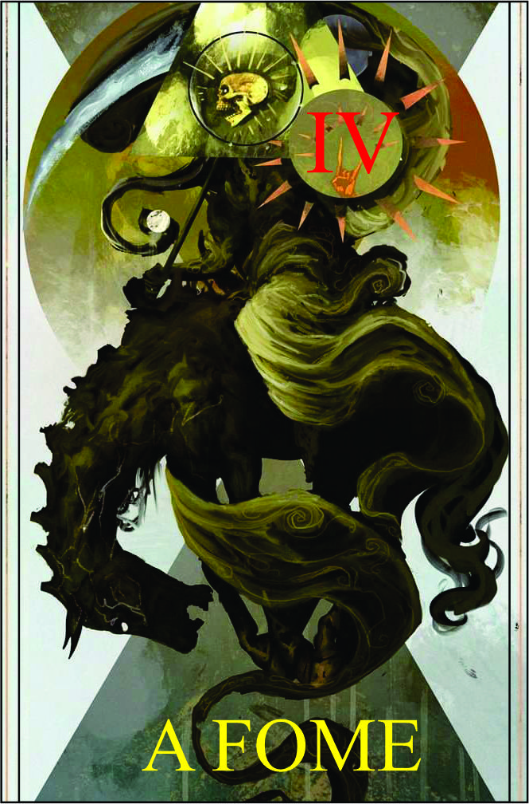

Fome
Têndencia: Maligno
Passiva:
Devorador Insaciável:
Como Cavaleiro da Fome, você é consumido por uma fome insaciável que consome sua própria essência (por consumir sua essência dificil de rastrear por ela). Essa fome lhe confere poderes sobrenaturais e a capacidade de drenar a energia vital dos outros para fortalecer-se.
Legado 1 - Toque Voraz:
Você estende sua mão e toca o alvo, drenando sua energia vital e causando dano contínuo por um curto período de tempo. Quanto mais tempo permanecer em contato com o alvo, mais energia vital será drenada, fortalecendo você e enfraquecendo o inimigo.
5 HP | Podendo ultrar sua vida e ganhando vida bônus na batalha
Condição:
Requer contato físico com o alvo.
Legado 2 - Devastação Faminta
Você canaliza sua fome insaciável em um ataque voraz. Ao liberar essa energia, você cria uma onda de destruição ao seu redor, causando dano em área aos inimigos próximos. Além disso, a Devastação Faminta drena a energia vital dos alvos atingidos, restaurando sua própria força.
Pega até em aliados 5 dano | ganhando vida adicional durante batalha 3 por alvo
Condição para ativar a habilidade:
Requer acumulação de energia sombria e fome intensa.
Legado 3 - Manto da Fome:
Você invoca um manto sombrio de fome ao seu redor, criando uma aura de terror e desespero. Os inimigos próximos são tomados por uma sensação de fome insaciável, reduzindo sua eficácia em combate e diminuindo sua resistência. Enquanto estiver dentro do alcance do Manto da Fome, você se fortalece, absorvendo a energia vital enfraquecida dos seus adversários.
Inimigos proximos recebe +1 de dano todas fontes | e você devora 2 dano do ataque do inimigo assim diminuindo o dano | dura 5 round
Condição para ativar a habilidade:
Requer a presença de múltiplos inimigos.
Legado 4 - Banquete Sinistro:
Após derrotar um inimigo, você pode se banquetear com sua energia vital, recuperando sua própria vitalidade e fortalecendo-se ainda mais. Durante o Banquete Sinistro, sua resistência é aumentada e você recebe um impulso adicional de poder, permitindo que você enfrente os desafios futuros com mais ferocidade.
Skill Extra uso uma vez até repor ela
Condição para ativar a habilidade:
Requer a derrota de um inimigo próximo.